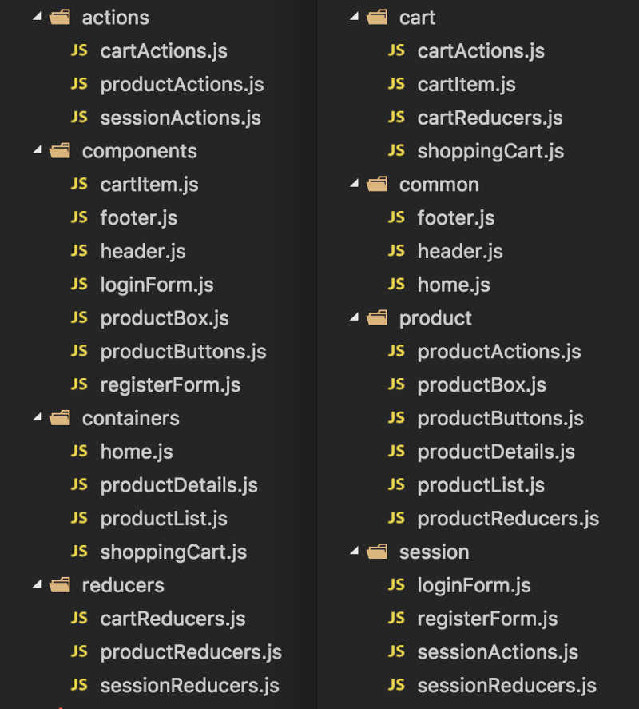
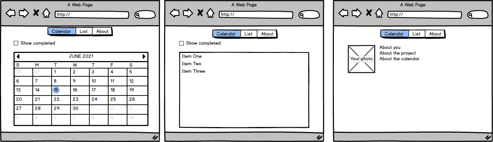

<!DOCTYPE html>
<html lang="en">
  <head>
    <meta charset="utf-8" />
    <meta name="viewport" content="width=device-width, initial-scale=1.0, maximum-scale=1.0, user-scalable=no" />

    <title>Занятие 42</title>
    <link rel="shortcut icon" href="./../favicon.ico"/>
    <link rel="stylesheet" href="./../dist/reveal.css" />
    <link rel="stylesheet" href="./../dist/theme/white.css" id="theme" />
    <link rel="stylesheet" href="./../css/highlight/zenburn.css" />
    <link rel="stylesheet" href="./../_assets/.reveal-md/styles.css" />

    <script>
      document.write('<script src="http://' + (location.host || 'localhost').split(':')[0] + ':35729/livereload.js?snipver=1"></' + 'script>');
    </script>
  </head>
  <body>
    <div class="reveal">
      <div class="slides"><section ><section data-markdown><script type="text/template">

# OTUS

## Javascript Basic

</script></section><section data-markdown><script type="text/template">

Вопросы?

</script></section></section><section ><section data-markdown><script type="text/template">

## reselect

</script></section><section data-markdown><script type="text/template">

<p style="text-align:left">
  <b>Мемоизация</b> — сохранение результатов выполнения функций для предотвращения повторных вычислений. Это один из способов оптимизации, применяемый для увеличения скорости выполнения компьютерных программ.
</p>

</script></section><section data-markdown><script type="text/template">

**Когда нужна мемоизация?**

- Для **чистых** функций, т. е. функций, которые возвращают один и тот же результат для одних и тех же входных данных
- Для **дорогостоящих** функций, т. е. функций, которые выполняют тяжелые вычисления.
- Для функций **с ограниченным и повторяющимся диапазоном входных данных**. При этом все возможные значения очень быстро попадают в кэш и функция вообще перестает работать.
- Для **рекурсивных** функций с повторяющимися входными значениями.

https://habr.com/ru/company/ruvds/blog/332384/  
https://underscorejs.org/docs/underscore.html#section-82

</script></section><section data-markdown><script type="text/template">

<p style="text-align:left">
  <b>Селектор</b> - функция (чистая), которая вытягивает из state определенные данные
</p>

```js
const selectNextState = (state) => state.nextMove;
```

<u>Имеет смысл выносить часть логики в селекторы, потому что:</u>

- селекторы, как чистые функции легко тестировать
- селекторы могут быть переиспользованы между компонентами
- на уровне селекторов можно включать дополнительные оптимизации (в т.ч. мемоизацию)

</script></section><section data-markdown><script type="text/template">

<p style="text-align:left">
  <b>Reselect</b> позволяет создавать селекторы, которые обладают следующими свойствами:
</p>

- Селекторы могут вычислять производные данные, позволяя Redux сохранять минимально возможное состояние.
- Селекторы эффективны. Селектор не пересчитывается, если не изменяется один из его аргументов.
- Селекторы являются составными. Их можно использовать как вход для других селекторов.

https://redux.js.org/recipes/computing-derived-data/

</script></section><section data-markdown><script type="text/template">

### Reselect - createSelector

```ts
/* one selector */
export function createSelector<S, R1, T>(
  selector: Selector<S, R1>,
  combiner: (res: R1) => T
): OutputSelector<S, T, (res: R1) => T>;

export function createSelector<S, P, R1, T>(
  selector: ParametricSelector<S, P, R1>,
  combiner: (res: R1) => T
): OutputParametricSelector<S, P, T, (res: R1) => T>;
```

</script></section><section data-markdown><script type="text/template">

```ts
/* two selectors */
export function createSelector<S, R1, R2, T>(
  selector: Selector<S, R1>,
  selector: Selector<S, R2>,
  combiner: (res1: R1, res2: R2) => T
): OutputSelector<S, T, (res1: R1, res2: R2) => T>;

export function createSelector<S, P, R1, R2, T>(
  selector: ParametricSelector<S, P, R1>,
  selector: ParametricSelector<S, P, R2>,
  combiner: (res1: R1, res2: R2) => T
): OutputParametricSelector<S, P, T, (res1: R1, res2: R2) => T>;
```

https://github.com/reduxjs/reselect#api

</script></section><section data-markdown><script type="text/template">

```js
const getFilledCellsCount = (state) => countFiledCells(state.gameField);

const getFilledCellsCountFactorial = createSelector(
  getFilledCellsCount,
  (count) => getFactorial(count)
);
```

https://github.com/reduxjs/reselect#api

</script></section><section data-markdown><script type="text/template">

При этом можно использовать параметризованные селекторы:

```ts
export const getOrderById = createSelector(
  getAllOrders, // { [key: number] : OrderDetails }
  // https://github.com/reduxjs/reselect/blob/v4.0.0/typescript_test/test.ts#L107
  (_state, orderId: number) => orderId,
  (ordersByid, orderId): Optional<OrderDetails> => ordersById[orderId]
);
```

**НО!** нужно помнить, что размер кэша у селекторов из createSelector === **1**

https://github.com/reduxjs/reselect#api  
https://github.com/reduxjs/reselect#use-memoize-function-from-lodash-for-an-unbounded-cache

</script></section><section data-markdown><script type="text/template">

## Вопросы?

</script></section></section><section  data-markdown><script type="text/template">

### [Недостатки redux?](https://redux.js.org/recipes/reducing-boilerplate)

</script></section><section ><section data-markdown><script type="text/template">

## Redux Toolkit

https://redux.js.org/redux-toolkit/overview

</script></section><section data-markdown><script type="text/template">

### Redux Toolkit - actions

```ts
function someActionCreator1(payload: { name: string; age: number }) {
  return {
    type: "SOME_ACTION",
    payload,
  };
}

const someActionCreator2 =
  createAction<{ name: string; age: number }>("SOME_ACTION");
```

https://redux-toolkit.js.org/api/createAction

</script></section><section data-markdown><script type="text/template">

```js
if (action.type === "SOME_ACTION") {
  action.payload. // nothing here
}

if (someActionCreator2.match(action)) {
  action.payload. // we know the payload
}
```

https://basarat.gitbook.io/typescript/type-system/typeguard

</script></section><section data-markdown><script type="text/template">

```js
function counter(state = 0, action) {
  switch (action.type) {
    case INCREMENT:
      return state + 1;
    case DECREMENT:
      return state - 1;
    default:
      return state;
  }
}

const counter = createReducer(0, {
  [increment]: (state) => state + 1,
  [decrement]: (state) => state - 1,
});
```

https://redux-toolkit.js.org/api/createReducer

</script></section><section data-markdown><script type="text/template">

```js
const reducer = createReducer(
  {
    totalAge: 0,
    names: "",
  },
  {
    [someActionCreator2.type]: (state, action) => ({
      totalAge: state.totalAge + action.payload.age,
      names: state.names + " " + action.payload.name,
    }),
  }
);
```

https://redux-toolkit.js.org/api/createReducer

</script></section><section data-markdown><script type="text/template">

## Вопросы?

</script></section></section><section ><section data-markdown><script type="text/template">

### Redux Toolkit - Иммутабельность

```js
import produce from "immer";

const baseState = [
  {
    todo: "Learn typescript",
    done: true,
  },
  {
    todo: "Try immer",
    done: false,
  },
];

const nextState = produce(baseState, (draftState) => {
  draftState.push({ todo: "Tweet about it" });
  draftState[1].done = true;
});
```

https://github.com/immerjs/immer  
https://immerjs.github.io/immer/docs/introduction

</script></section><section data-markdown><script type="text/template">

```js
const reducer = createReducer(
  {
    totalAge: 0,
    names: "",
  },
  {
    [someActionCreator2.type]: (state, action) => {
      state.totalAge += action.payload.age;
      state.names += ", " + action.payload.name;
      return state;
    },
  }
);
```

https://redux-toolkit.js.org/api/createReducer#direct-state-mutation

</script></section><section data-markdown><script type="text/template">

## Вопросы?

</script></section></section><section ><section data-markdown><script type="text/template">

## Redux Toolkit - Slices

https://redux.js.org/redux-toolkit/overview

</script></section><section data-markdown><script type="text/template">

```ts
export declare interface Slice<
  State = any,
  CaseReducers extends SliceCaseReducers<State> = SliceCaseReducers<State>,
  Name extends string = string
> {
  /**
   * The slice name.
   */
  name: Name;
  /**
   * The slice's reducer.
   */
  reducer: Reducer<State>;
  /**
   * Action creators for the types of actions that are handled by the slice reducer.
   */
  actions: CaseReducerActions<CaseReducers>;
  /**
   * The individual cae reudcer functions that were passed in the `reducers` parameter.
   * This enables reuse and testing if they were defined inline when calling `createSlice`.
   */
  caseReducers: SliceDefinedCaseReducers<CaseReducers>;
}
```

https://redux-toolkit.js.org/api/createSlice

</script></section><section data-markdown><script type="text/template">

```js
const counterSlice = createSlice({
  name: "counter",
  initialState: 0,
  reducers: {
    increment: (state) => state + 1,
    decrement: (state) => state - 1,
  },
});

const store = configureStore({
  reducer: counterSlice.reducer,
});

document.getElementById("increment").addEventListener("click", () => {
  store.disptch(counterSlice.actions.increment());
});
```

https://redux-toolkit.js.org/tutorials/basic-tutorial#introducing-createslice

</script></section><section data-markdown><script type="text/template">

## Вопросы?

</script></section></section><section ><section data-markdown><script type="text/template">

### Из чего состоит Redux Toolkit

1. Redux
2. Redux-Thunk
3. Immer
4. Reselect

https://github.com/reduxjs/redux-toolkit/blob/master/package.json#L60

</script></section><section data-markdown><script type="text/template">

### Redux Toolkit API

1. configureStore
2. getDefaultMiddleware
3. createReducer
4. createAction
5. createSlice
6. createSelector
7. createAsyncThunk
8. createEntityAdapter
9. Other Exports

</script></section><section data-markdown><script type="text/template">

### Redux Toolkit - configureStore

```ts
type ConfigureEnhancersCallback = (
  defaultEnhancers: StoreEnhancer[]
) => StoreEnhancer[]

interface ConfigureStoreOptions<S = any, A extends Action = AnyAction> {
  // A single reducer function that will be used as the root reducer, or an
  // object of slice reudcers that will passed to `combineReducers()`
  reducer: Reducer<S, A> | ReducersMapObject<S, A>
  // An array of Redux middleware to install
  middleware?; Middleware<{}, S>[]
  // Whether to enable Redux DevTools integration. Defaults to `true`.
  // Additional configuration can be done by passing Redux Devtools options
  devTools?: boolean | DevToolsOptions
  // the initial state, same as Redux's createStore.
  preloadedState?: DeepPartial<S extends any ? S : S>
  // The store enhancers to apply. See Redux's `createStore()`.
  enhancers?: StoreEnhancer[] | ConfigureEnhancersCallback
}
```

https://redux-toolkit.js.org/api/configureStore

</script></section><section data-markdown><script type="text/template">

## Вопросы?

</script></section></section><section ><section data-markdown><script type="text/template">

### Достойны упоминания

</script></section><section data-markdown><script type="text/template">

1. [**Redux-actions**](https://redux-actions.js.org/)
2. [**typesafe-actions**](https://github.com/piotrwitek/typesafe-actions)
3. [**Rematch**](https://rematch.github.io/rematch)

</script></section><section data-markdown><script type="text/template">

Стоит почитать

[Совершенствуем Redux](https://habr.com/ru/post/353554/)

[https://habr.com/ru/post/491848/](https://habr.com/ru/post/491848/)

</script></section><section data-markdown><script type="text/template">

## Вопросы?

</script></section></section><section ><section data-markdown><script type="text/template">

## Организация проекта

</script></section><section data-markdown><script type="text/template">

### Types vs Features



<a href="https://blogru.4xxi.com/%D0%BE%D1%80%D0%B3%D0%B0%D0%BD%D0%B8%D0%B7%D0%B0%D1%86%D0%B8%D1%8F-%D0%BA%D0%BE%D0%B4%D0%B0-%D0%B2-%D0%BC%D0%B0%D1%81%D1%88%D1%82%D0%B0%D0%B1%D0%BD%D1%8B%D1%85-react-%D0%BF%D1%80%D0%BE%D0%B5%D0%BA%D1%82%D0%B0%D1%85-bc00ce1621e3">Организация кода в масштабных React проектах</a>

</script></section><section data-markdown><script type="text/template">

## Вопросы?

</script></section></section><section ><section data-markdown><script type="text/template">

## Итоги

</script></section><section data-markdown><script type="text/template">

### В чем плюсы использования Redux Toolkit ?

</script></section><section data-markdown><script type="text/template">

### Какие библиотеки идут

### в составе Redux Toolkit ?

</script></section><section data-markdown><script type="text/template">

### Дополнительные материалы

1. [Идиоматический Redux: Redux Toolkit 1.0](https://ru.hexlet.io/blog/posts/idiomaticheskiy-redux-redux-starter-kit-1-0)
2. [Redux Toolkit как средство эффективной Redux-разработки](https://habr.com/ru/company/inobitec/blog/481288/)
3. [Redux Toolkit Tutorial](https://redux-toolkit.js.org/tutorials/basic-tutorial) ( и продолжения [раз](https://redux-toolkit.js.org/tutorials/intermediate-tutorial) и [два](https://redux-toolkit.js.org/tutorials/advanced-tutorial))
4. [Deep Dive into Redux Toolkit with React - Complete Guide](https://www.youtube.com/watch?v=9lCmbth63k0)

</script></section></section><section ><section data-markdown><script type="text/template">

Домашнее задание

</script></section><section data-markdown><script type="text/template">

Реализовать одностраничное приложение - календарь задач.

Приложение должно предоставлять минимум следующие страницы:

- Календарь
- Список
- О проекте

</script></section><section data-markdown><script type="text/template">



</script></section><section data-markdown><script type="text/template">

Все представления позволяют

- создавать, редактировать, удалять задачи (заголовок, описание, статус выполнения, дата)
- фильтровать по статусу выполнения
- делать [fuzzy search](https://whatis.techtarget.com/definition/fuzzy-search) (можно взять [`Fuzzy search`](https://www.npmjs.com/package/fuzzy-search))
- состояние должно отображаться на url (чтобы его можно было сохранять в закладки)

</script></section><section data-markdown><script type="text/template">

Для выполнения нужно взять:

- апи для хранения данных из прошлого домашнего задания
- роутер из прошлого домашнего задания
- для работы с состоянием использовать redux-toolkit

</script></section><section data-markdown><script type="text/template">

Задание проверяется после:

- открыт пуллреквест
- написаны тесты (покрытие 60%)
- сделан деплой на github pages
</script></section></section></div>
    </div>

    <script src="./../dist/reveal.js"></script>

    <script src="./../plugin/markdown/markdown.js"></script>
    <script src="./../plugin/highlight/highlight.js"></script>
    <script src="./../plugin/zoom/zoom.js"></script>
    <script src="./../plugin/notes/notes.js"></script>
    <script src="./../plugin/math/math.js"></script>
    <script>
      function extend() {
        var target = {};
        for (var i = 0; i < arguments.length; i++) {
          var source = arguments[i];
          for (var key in source) {
            if (source.hasOwnProperty(key)) {
              target[key] = source[key];
            }
          }
        }
        return target;
      }

      // default options to init reveal.js
      var defaultOptions = {
        controls: true,
        progress: true,
        history: true,
        center: true,
        transition: 'default', // none/fade/slide/convex/concave/zoom
        plugins: [
          RevealMarkdown,
          RevealHighlight,
          RevealZoom,
          RevealNotes,
          RevealMath
        ]
      };

      // options from URL query string
      var queryOptions = Reveal().getQueryHash() || {};

      var options = extend(defaultOptions, {"slideNumber":true,"hash":true,"history":false,"backgroundTransition":"fade","width":"80%"}, queryOptions);
    </script>


    <script>
      Reveal.initialize(options);
    </script>
  </body>
</html>
